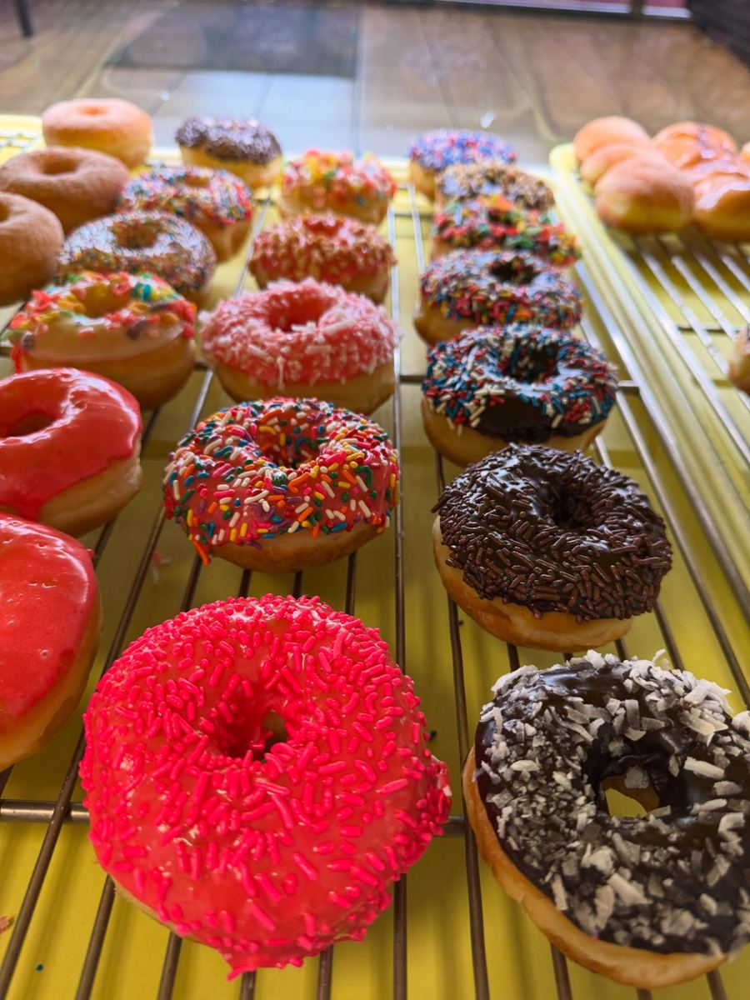
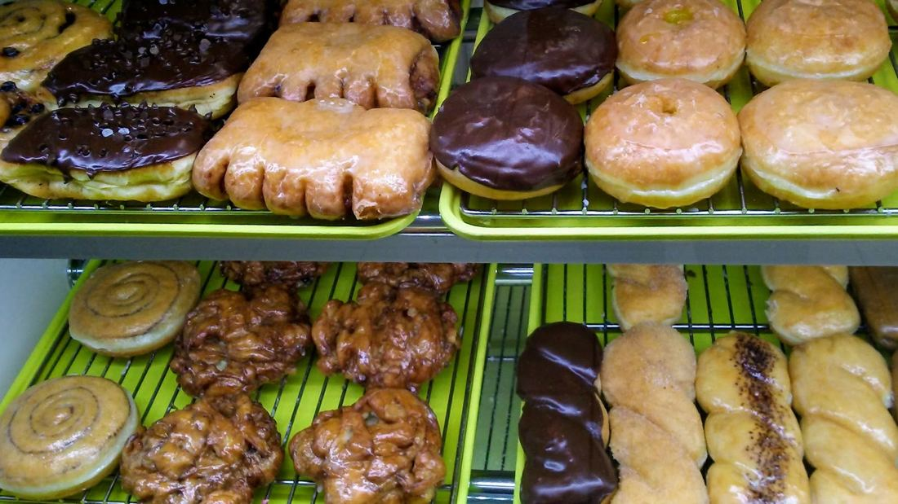
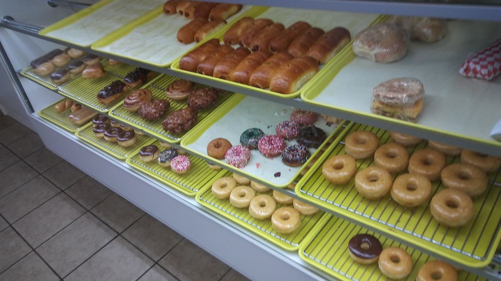
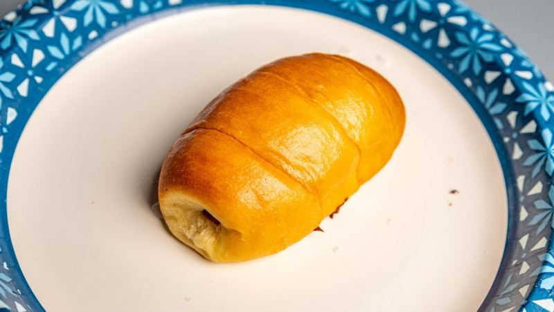
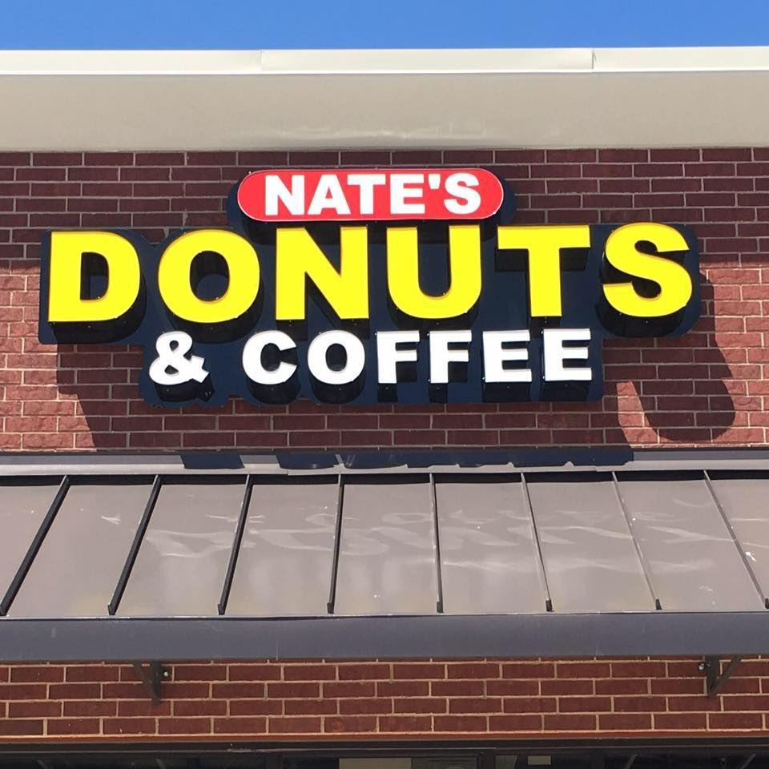
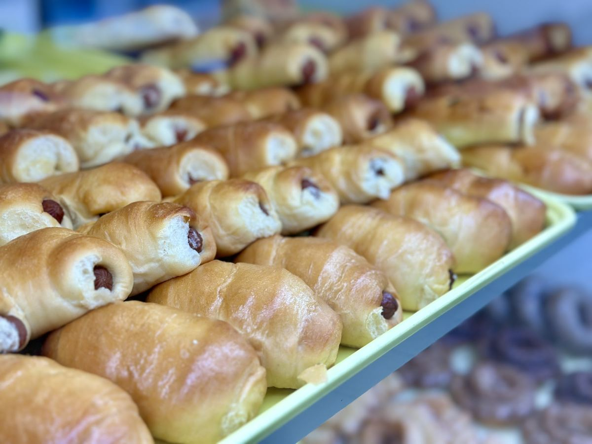

Fresh donuts, kolaches and coffee, right off 820 on the corner of Azle Avenue.






Regular, spicy and boudin kolaches come out warm, next to yeast, cake and old-fashioned donuts. Grab one, or a few for the table.
Mon–Sat 5 AM–12 PM
Sun 6 AM–12 PM
per public listing; confirm current hours
Doors open at 5 AM Monday through Saturday, per the listing.